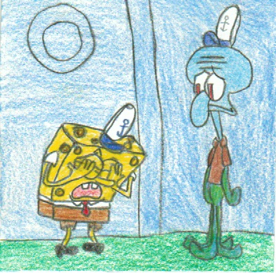
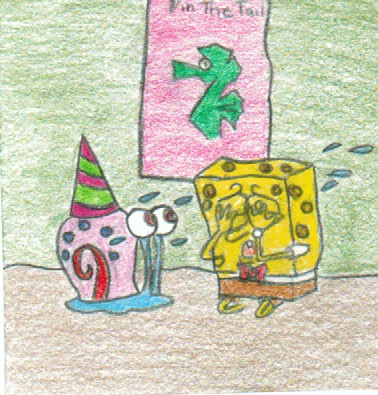
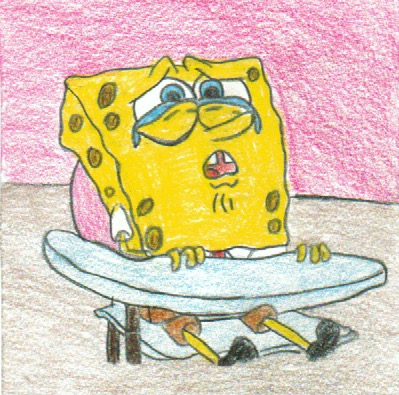

1 / 3

March 29th 2002 - Krab Borg
Spongebob decides to stay up late and watch a movie, he watches horror movies about robots taking over the world. He is paranoid ever since that movie and thinks Mr.Krabs is a robot.
2 / 3

May 17th 2002 - Party Pooper Pants
Spongebob decides to through a house party for his friends, he takes all his time buying decorations, and food. His house is all nice and pretty in time for the party. But nothing goes according to his plans.
3 / 3

September 20th 2002 -New Student Starfish
Spongebob and Partick are in school with Mrs. Puff being their teacher. Mrs.Puff has a good noodle system in place where she gives stars to good students. Patrick and Spongebob start laughing and Mrs.Puff takes 2 stars from Spongebob.
❮
❯